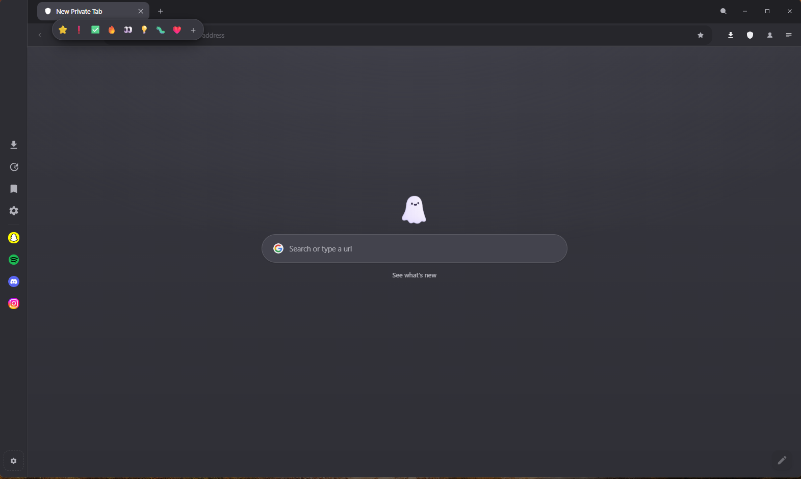

No add-ons to install, no store to visit and no paid tier. This is what Privoo 6.0.4 does the moment you open it.

| Ad & tracker blocking | EasyList, EasyPrivacy and uBlock Origin lists, enforced at the network layer |
| Custom filter lists | Add your own list URLs, or switch off any built-in default |
| HTTPS-only mode | Upgrades insecure http:// connections automatically |
| Third-party cookies | Blocked, which is what stops the cross-site half of tracking |
| DNS over HTTPS | Cloudflare, AdGuard, Quad9, NextDNS, Google, or a resolver of your own |
| Fingerprint protection | Canvas noise that is deterministic per origin, a normalised user agent, WebRTC IP-leak protection |
| DNT & Global Privacy Control | Both signals sent with every request |
| Tracking-parameter stripping | Removes utm_*, fbclid, gclid and the rest; minimises the Referer header |
| Paste protection | Checks a pasted link for a name hidden before an @, characters that only look like letters, or a brand on somebody else's domain |
| Pop-up blocking | A page may only open a window if you just interacted with it |
| Proxy & Tor | Route traffic through a manual proxy or a bundled Tor circuit |
| Profiles & guest mode | Fully isolated identities, plus a session that records nothing |
| Family filtering | Optional adult-content blocking at the DNS and navigation layers |
| Password vault | Encrypted, local-only credentials with autofill |
Rest on a tab and a thumbnail of that page appears underneath it. The capture is taken when you leave a tab, at the moment its picture stops changing, so it is already in hand by the time you hover.
A tab you have not looked at in a while releases its page and keeps its title and address. Touching it loads the page back. Never a tab playing audio, one you pinned, or one with something typed into a form.
Pin an emoji to a tab to make one of twenty findable. Tabs from the same site gather into an island on their own, without becoming a formal group.
A collapsible side panel with an icon rail, an integrated toolbar and a spotlight-style search across every open tab.
Two pages side by side. Drag a tab onto either half of the window to split instantly.
Named, coloured tab groups, and Chrome-style shrink-to-fit sizing so the strip never scrolls before it has to.
Strip a page down to its text, hide the browser entirely, or render the page as a phone would.
First-party tools that live on the Extensions page. Nothing to install and
no third party involved. Third-party .crx and unpacked
extensions can be loaded from the same page.
| Extension | Default | What it adds |
|---|---|---|
| Privacy Shield | Always on | Ad, tracker and malware blocking |
| Downloads | Always on | Download manager in the toolbar |
| HTTPS-Only Mode | On | Automatic secure-connection upgrades |
| Password Vault | On | Encrypted local logins and autofill |
| Privoo AI | On | Assistant with saved chat history |
| Notes | Off | A scratchpad in the toolbar |
| Calculator | Off | A full calculator in the toolbar |
| Media Downloader | Off | Save video and audio from pages, via yt-dlp |
| Lucid Mode | Off | Hover any video for a slider that lifts clarity, colour and depth |
Anthropic, OpenAI, Gemini or DeepSeek on a key you already have. It will also run a model entirely on your own machine through Ollama, in which case nothing leaves it at all.
Requests go from your machine to the provider you chose. There is no Privoo relay, and the key is encrypted on disk.
Attach a document and the text is extracted on your machine. Only that text is sent, never the file.
Publish a folder from your own computer as a website reachable over Tor. No server to rent, no domain to register, no ports to forward. The browser is the host. Close it and the site is gone.
Live suggestions and your engine's own icon. Shortcut tiles, a clock, weather and blocking stats are all optional and all off unless you turn them on.
A different freely licensed photograph behind every new tab, credited to its photographer in the corner. A batch is fetched once an hour and shared across tabs, so ten new tabs is one download. Off by default.
Not pure black. The tab strip, toolbar, panels and page each sit on their own step of one scale, so the window reads as a frame around a page rather than one flat slab.
Recolours the whole interface. The default Mono accent is adaptive, white on the dark interface and ink on the light one, so it is never the brightest thing on screen.
Your own image or a looping video, optionally stretched behind the tab strip and toolbar, which then go frosted over it. Preset themes are drawn from their own palettes, so there is no image set to download.
Interface font, corner style, compact mode, font scaling and custom CSS. Ten search engines, or one of your own.